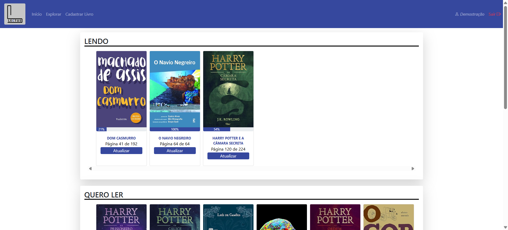
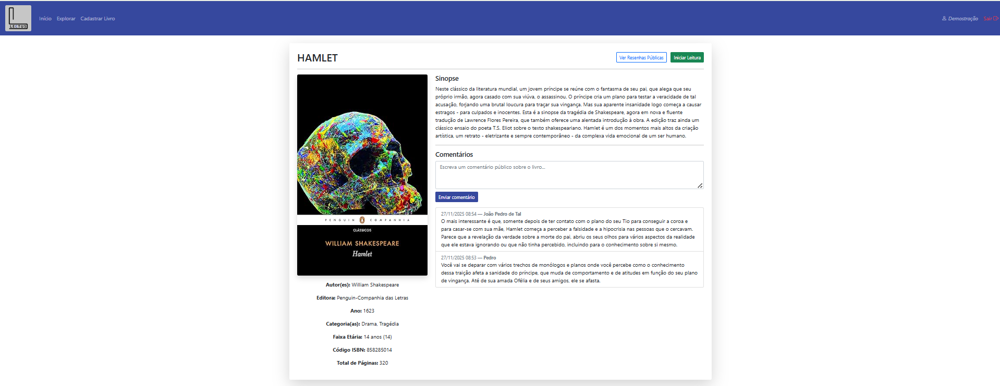
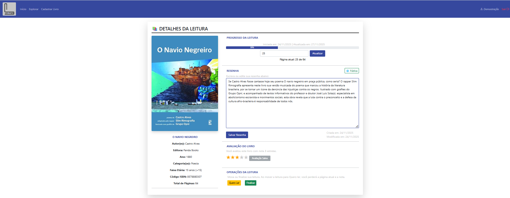

Organize, Resenhe, Conecte-se.
A plataforma definitiva desenvolvida no IFRS para incentivar e gerenciar a leitura dos jovens do Ensino Médio.
Acessar Plataforma AgoraO LECTUS nasceu da necessidade de oferecer aos estudantes do Ensino Médio uma ferramenta centralizada para gerenciar tanto as leituras obrigatórias quanto as de lazer. Nosso objetivo é transformar a organização de livros em uma tarefa simples e motivadora.
"Foram realizadas pesquisas bibliográfica, levantamento de requisitos, modelagem UML e criação de protótipos de interface para garantir uma experiência sólida."
- Trecho do Projeto Integrador III (Os autores).
Um projeto com foco em usabilidade e na jornada do jovem leitor entre as histórias.
Tudo o que você precisa para controlar sua leitura e compartilhar suas resenhas.
Classifique instantaneamente seus livros em três categorias vitais: 'Lendo', 'Lidos' e 'Quero Ler. Mantenha o foco no que é prioridade e monitorando seu progresso de leitura ao longo do tempo.
Crie resenhas pessoais detalhadas ou envie comentários rápidos. Disponibilize suas resenhas para o público e descubra mais opiniões sobre o que esta lendo.
Seu perfil, suas regras. Mantenha seu histórico de leitura e resenhas como um diário particular ou opte por um perfil público para se conectar e compartilhar com a comunidade LECTUS.
Focamos em regras de negócio que garantem a qualidade do conteúdo e a usabilidade.
Todo livro deve ter um autor e uma categoria: Para manter a integridade e precisão do catálogo, o sistema exige que todo livro cadastrado esteja associado a, no mínimo, um autor e uma categoria. Isso impede a adição de dados incompletos ou de difícil rastreamento.
Comunicação objetiva: Impomos um limite de 200 caracteres para comentários. Isso incentiva a síntese e a clareza, facilitando a leitura rápida e o engajamento na comunidade.
Acompanhe seu histórico: A plataforma registra as datas de identificação dos livros, permitindo que você visualize a evolução do seu acervo e das suas interações ao longo do tempo.
Fruto de um Projeto Integrador no IFRS, o LECTUS é otimizado para a rotina do Ensino Médio, priorizando ferramentas que apoiam a disciplina e a organização acadêmica.
Confira a interface limpa e intuitiva desenvolvida para você. Clique para ampliar!

Visualização do Acervo

Detalhes e Classificação

Área de Resenhas
As imagens acima são capturas reais da interface da plataforma LECTUS.
Não perca mais tempo organizando. Use o LECTUS e concentre-se na leitura. Seu próximo livro espera por você.
Acessar Plataforma